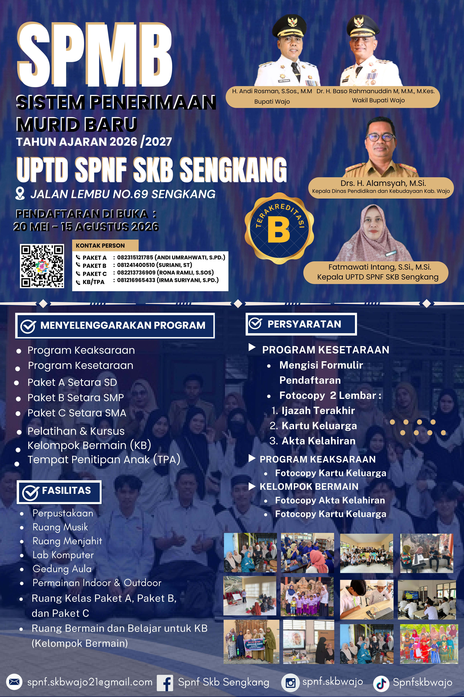

Total Pendaftar
0
T.A. 2025/2026
Diterima
0
Terverifikasi
Menunggu
0
Diproses
Ditolak
0
Tidak lolos
Poster Pendaftaran

Periode Pendaftaran 2024/2025
Gelombang I : 1 Juli — 31 Juli 2025
Gelombang II : 1 Agustus — 31 Agustus 2025
Kontak SKB Sengkang
(0485) 21xxx
Jl. Ahmad Yani, Sengkang, Wajo
Senin–Jumat, 08.00–15.00 WITA
Program Pendidikan Tersedia
Paket A (Setara SD)
Usia 15+ yang belum tamat SD/MI. Durasi 3–6 semester.
Paket B (Setara SMP)
Lulusan SD/MI atau sederajat. Durasi 3–6 semester.
Paket C (Setara SMA)
Lulusan SMP/MTs atau sederajat. Durasi 3–6 semester.
Kursus Menjahit
Keterampilan tata busana & konveksi. Durasi 3–6 bulan.
Kursus Komputer
Operasional komputer & internet dasar. Durasi 2–3 bulan.
Pendidikan Keaksaraan
Baca, tulis, hitung (Calistung) bagi masyarakat.
Total Pendaftar
0
T.A. 2025/2026
Diterima
0
Terverifikasi
Menunggu
0
Diproses
Ditolak
0
Tidak lolos
Poster Pendaftaran
Periode Pendaftaran 2024/2025
Gelombang I : 1 Juli — 31 Juli 2025
Gelombang II : 1 Agustus — 31 Agustus 2025
Kontak SKB Sengkang
(0485) 21xxx
Jl. Ahmad Yani, Sengkang, Wajo
Senin–Jumat, 08.00–15.00 WITA
🗺️
Sistem Informasi Geografis – Anak Tidak Sekolah Kecamatan Tempe, Kabupaten Wajo – T.A. 2024/2025
–
Total ATS–
Putus SD–
Putus SMP–
Putus SMA–
LTM–
BPB–
Jumlah ATS
< 24 — Rendah
25–49 — Sedang
50–69 — Tinggi
≥ 70 — Kritis
Sumber: Data Verval ATS – Dinas Pendidikan dan Kebudayaan Kabupaten Wajo @2026
Arahkan kursor ke peta untuk koordinat
📋 Rekapitulasi Data ATS – Kecamatan Tempe
| No | Kelurahan | Putus SD | Putus SMP | Putus SMA | Total ATS | LTM | BPB | Kategori |
|---|
Verifikasi Berkas Pendaftar
Halaman ini digunakan petugas SKB untuk memverifikasi berkas fisik peserta. Pastikan berkas asli sudah diterima sebelum mengubah status.
Laporan & Cetak Data
Rekapitulasi Pendaftar
Belum ada data pendaftar.
Cetak Daftar Peserta
Cetak daftar peserta didik untuk keperluan administrasi SKB Sengkang.